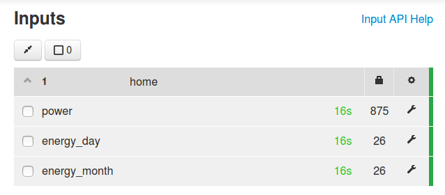
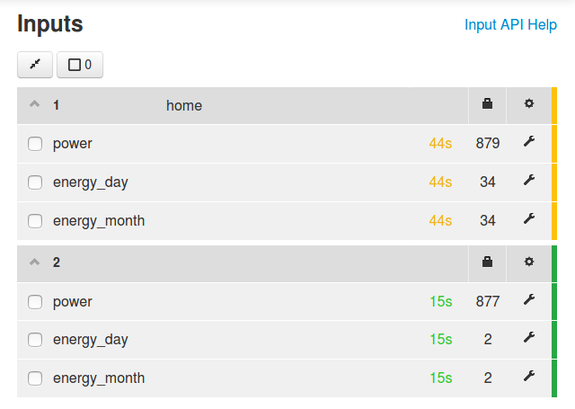
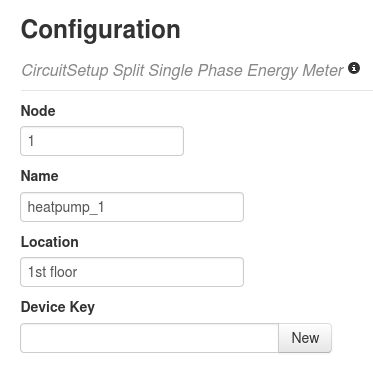
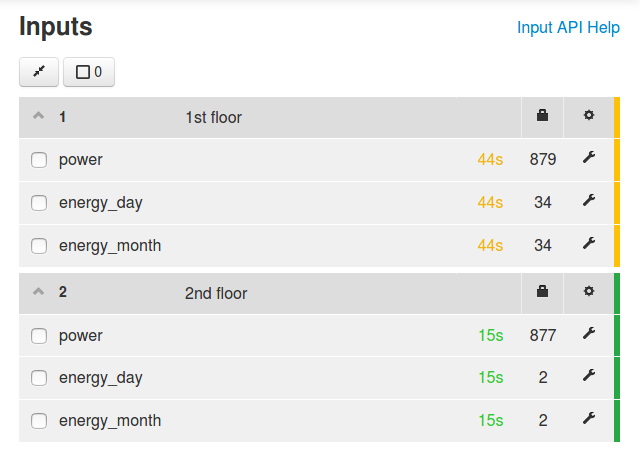

risorse | emond multi-istanza
Questi appunti costituiscono un'estensione dell'esperimento Monitoraggio consumi con Emoncms.
Il servizio emond è in grado di monitorare un contatore elettronico di energia. Come fare se i contatori da controllare sono due o più? La domanda è già stata posta nei forum di Emoncms e la risposta l'ha fornita l'autore stesso di emond:
I think it should be possible to run 2 instances of emond on the same RPi, though I have never tried. You just have to change the hardcoded config file name for one of them so you can have two different configurations (which you need to specify 2 different GPIO inputs).
As an alternative emond could be transformed into a multi threaded program which could handle multiple GPIO inputs natively. But this would required quite some work.
…
Il suggerimento di ricompilare l'eseguibile modificando il percorso del file di configurazione mi sembra poco pratico: sarei costretto a preparare un nuovo binario per ogni contatore aggiuntivo. Preferisco optare per una soluzione più flessibile e retrocompatibile: modificare il programma in modo che accetti un parametro opzionale che rappresenta – per esempio – un suffisso da applicare al nome del file di configurazione e ovunque si renda necessario. In questo modo diventa possibile lanciare un numero indefinito di istanze del servizio, ognuna parametrizzata con un suffisso diverso, sicuri di non creare confusione. Bisogna capire quali sono i punti in cui occorre applicare il suffisso.
Analizzando il codice dopo averlo scaricato dal repository git ufficiale (l'ultimo rilascio disponibile ad oggi è associato al commit b411381 del 27 settembre 2015, v.0.7.1), i punti in cui appare il nome «emon» o qualche suo derivato sono cinque, tre nel sorgente emond.c e due nel makefile (file Makefile).
[emond.c]
...
#define CONFIG_FILE "/etc/emon.conf"
#define NV_FILENAME "emond.dat"
...
openlog("emond", LOG_PID|LOG_CONS, LOG_USER);
In questo caso è necessario personalizzare il nome del file di configurazione, il nome del file contenente lo storico dei dati e il nome identificativo dei messaggi inviati al syslog. Per questa ragione predispongo tre buffer che conterranno i nomi per questi oggetti, quindi i nomi standard (da utilizzare nel caso il suffisso non sia sttato specificato), infine tre template che rappresentano i nomi per i tre oggetti al netto del suffisso:
#define CONFIG_FILE "/etc/emon.conf" #define NV_FILENAME "emond.dat"#define BUFFER_SIZE 64 char DAEMON_NAME [BUFFER_SIZE]; char CONFIG_FILE [BUFFER_SIZE]; char NV_FILENAME [BUFFER_SIZE]; #define DAEMON_NAME_DEFAULT "emond" #define CONFIG_FILE_DEFAULT "/etc/emon.conf" #define NV_FILENAME_DEFAULT "emond.dat" #define DAEMON_NAME_TEMPLATE "emon-%s" #define CONFIG_FILE_TEMPLATE "/etc/emon-%s.conf" #define NV_FILENAME_TEMPLATE "emond-%s.dat"
I nomi definitivi vengono determinati all'avvio del programma a seconda che il suffisso sia stato specificato (argc==2) oppure no (argc==1):
int main(int argc, char **argv)
{
if (argc == 2)
{
const char* suffix = argv[1];
snprintf(DAEMON_NAME, BUFFER_SIZE, DAEMON_NAME_TEMPLATE, suffix);
snprintf(CONFIG_FILE, BUFFER_SIZE, CONFIG_FILE_TEMPLATE, suffix);
snprintf(NV_FILENAME, BUFFER_SIZE, NV_FILENAME_TEMPLATE, suffix);
}
else
{
strncpy(DAEMON_NAME, DAEMON_NAME_DEFAULT, BUFFER_SIZE);
strncpy(CONFIG_FILE, CONFIG_FILE_DEFAULT, BUFFER_SIZE);
strncpy(NV_FILENAME, NV_FILENAME_DEFAULT, BUFFER_SIZE);
}
openlog("emond"DAEMON_NAME, LOG_PID|LOG_CONS, LOG_USER);
...
emond può visualizzare i dati ricavati dal contatore su un display LCD opportunamente collegato alla porta GPIO. Poiché ora ci sono in gioco più istanze del servizio, va definita la politica di gestione dell'LCD. Se ci sono più istanze attive penso non abbia senso aggiornarlo senza un adeguato coordinamento tra le stesse: si correrebbe il rischio di mostrare sul visore una serie di misure tra loro scorrelate in rapida successione senza che l'utente abbia il minimo controllo. Per questa ragione ho deciso di inibire l'uso del display nel caso emond giri come istanza, lasciando però intatto il funzionamento originale nel caso di un'installazione standard:
/* Init LCD screen */
if (argc == 2)
{
syslog(LOG_DAEMON | LOG_INFO, "Running as an instance, LCD will not be updated");
}
else if (lcd_init() < 0)
{
syslog(LOG_DAEMON | LOG_WARNING, "Unable to setup LCD screen, display is disabled\n");
}
In calce il link per il download del file.
I punti di intervento riguardano il file di configurazione e lo script in init.d:
[Makefile] ... install: target @echo "---- Install binaries and scripts ----" cp $(SRCPATH)/$(PROG) $(BINPATH) cp conf/emon.conf $(CNFPATH)/ cp init.d/emon $(CNFPATH)/init.d/
Ho deciso di non intervenire sul makefile, per preservarne il funzionamento originale. Oltretutto l'installazione di una nuova istanza del servizio emond si ottiene facilmente con pochi passaggi.
La prima cosa da fare è arrestare il servizio di emond, qualora fosse in esecuzione:
$ sudo service emon stop
Prima di procedere con la creazione delle nuove istanze occorre ricompilare il servizio, dopo aver apportato al sorgente originale emond.c le modifiche appena discusse o sostituendolo con la versione aggiornata. I comandi da impartire sono:
$ cd $ cd emond $ make
La sostituzione del vecchio binario conclude il primo passo:
$ sudo cp src/emond /usr/local/bin
Supponendo di voler rinominare il servizio attualmente registrato come emond in emon-hp1 (dove hp1 sta per “heatpump #1”), va conseguentemente rinominato lo script associato:
$ cd /etc/init.d $ sudo mv emon emon-hp1
Lo script va poi modificato nelle parti indicate:
# Provides: emond-hp1 ... PIDFILE=/var/run/$NAMEemond-hp1.pid ... OPTS=hp1
Il parametro OPTS rappresenta i parametri che il sistema operatico passa al servizio sulla riga di comando, in questo caso il suffisso hp1. Ora va adattato il file di configurazione:
$ cd .. $ sudo mv emon.conf emon-hp1.conf
In calce il link per il download dei due file.
Finalmente si può riavviare il servizio:
$ sudo service emon-hp1 start
Una rapida occhiata al syslog ci conferma che il servizio è partito con il nuovo nome:
$ tail -f /var/log/syslog Dec 16 21:13:55 emonpi emon-hp1[3665]: Start Energy monitor daemon Dec 16 21:13:55 emonpi emon-hp1[3673]: Starting Energy Monitor (version 0.7.2) Dec 16 21:13:55 emonpi emon-hp1[3673]: Config parameters read from /etc/emon-hp1.conf: Dec 16 21:13:55 emonpi emon-hp1[3673]: *************************** Dec 16 21:13:55 emonpi emon-hp1[3673]: pulse_input_pin: 25 Dec 16 21:13:55 emonpi emon-hp1[3673]: wh_per_pulse: 1 Dec 16 21:13:55 emonpi emon-hp1[3673]: pulse_length: 0 Dec 16 21:13:55 emonpi emon-hp1[3673]: max_power: 3300 Dec 16 21:13:55 emonpi emon-hp1[3673]: flash_dir: /media/data Dec 16 21:13:55 emonpi emon-hp1[3673]: lcdproc_port: 0 Dec 16 21:13:55 emonpi emon-hp1[3673]: api_base_uri: http://127.0.0.1 Dec 16 21:13:55 emonpi emon-hp1[3673]: api_key: ... Dec 16 21:13:55 emonpi emon-hp1[3673]: api_update_rate: 30 Dec 16 21:13:55 emonpi emon-hp1[3673]: node_number: 1 Dec 16 21:13:55 emonpi emon-hp1[3673]: *************************** Dec 16 21:13:55 emonpi emon-hp1[3673]: Data file /media/data/emond-hp1.dat not yet created ...
Per richiedere l'avvio automatico del servizio dare il seguente comando:
$ sudo update-rc.d emon-hp1 defaults
A conclusione di questa fase, ora che lo script emond non esiste più (è stato rinominato in emon-hp1) si procede con la rimozione del servizio:
$ sudo update-rc.d emon remove
Per maggiori dettagli riguardo a questo aspetto, consultare la man page di update-rc.d:
When invoked with the remove option, update-rc.d removes any links in the /etc/rcrunlevel.d directories to the script /etc/init.d/name. The script must have been deleted already. If the script is still present then update-rc.d aborts with an error message.
Supponendo di voler monitorare una seconda pompa di calore occorre creare una nuova istanza del servizio, da denominare per esempio emon-hp2. Il binario è già predisposto, basta perciò registrare e configurare debitamente la nuova istanza. Per lo script conviene partire da quello di un'istanza preesistente:
$ cd /etc/init.d $ sudo cp emon-hp1 emon-hp2
A questo punto si modifica lo script sostituendo il suffisso originale con quello nuovo:
# Provides: emond-hp1hp2 ... PIDFILE=/var/run/emond-hp1hp2.pid ... OPTS=hp1hp2
Si predispone quindi il file di configurazione con la stessa logica:
$ cd .. $ sudo cp emon-hp1.conf emon-hp2.conf
Il file di configurazione va modificato in funzione delle caratteristiche del nuovo contatore e dello schema di collegamento alla scheda Raspberry Pi. Se il contatore è dello stesso modello del precedente, gli unici punti di intervento sono il parametro pulse_input_pin, che indica il pin della GPIO al quale è connesso il contatto SO+ del nuovo contatore, oltre ovviamente a node_number, l'indice numerico che identifica univocamente il contatore nell'impianto:
pulse_input_pin =2524 node_number =12
In calce il link per il download dei due file.
Per avviare il servizio si procede al solito modo:
$ sudo service emon-hp2 start
Anche la richiesta di avvio automatico è la sempre stessa:
$ sudo update-rc.d emon-hp2 defaults
Dopo aver riavviato la scheda, si può verificare lo stato delle due istanze:
$ sudo service --status-all ... [ + ] emon-hp1 [ + ] emon-hp2 ....
L'indicazione che entrambe le istanze sono attive è il risultato atteso.
La rinomina dell'istanza originale del servizio emond da emond a emon-hp1 è del tutto trasparente per Emoncms; collegando l'unico contatore che ho a disposizione sul pin 25 della porta GPIO le letture continuano ad essere associate al nodo 1, come si evince dalla pagina Input:
Il nome dell'istanza di emond non ha effetto su Emoncms, ciò che conta è il node_number
Se collego il contatore al pin 24 della porta GPIO allora entra in gioco la seconda istanza di emond, quella denominata emon-hp2, associata al nodo 2:
Emoncms mostra che ora i dati giungono dal nodo 2
Conviene associare un device al nodo 2, come è già stato fatto inizialmente per il nodo 1. Per accedere alla maschera di configurazione è sufficiente selezionare l'icona a forma di chiave inglese associata al nodo:
Le proprietà del device associato al secondo contatore
Volendo è possibile uniformare la definizione del primo device alla nuova forma:
Le proprietà del device associato al primo contatore
Dopo queste modifiche La pagina Input si presenta così:
Per la creazione dei feed del nodo 2 si rimanda alla documentazione ufficiale.
Pagina modificata il 24/12/2019